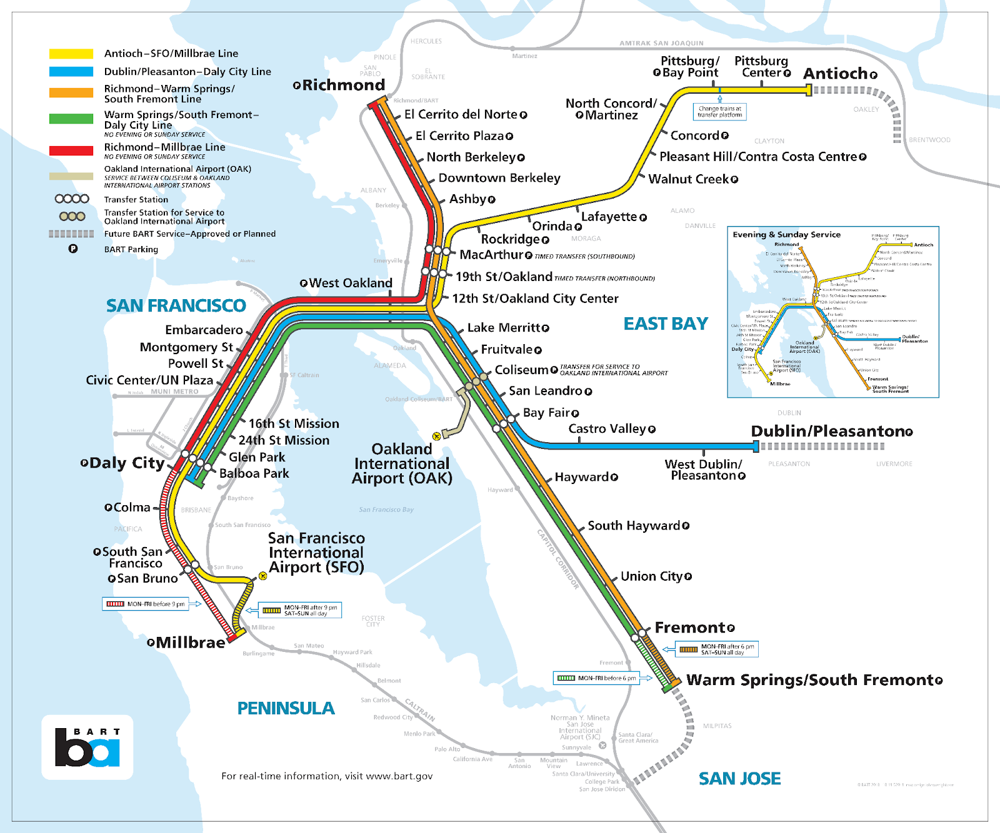

Ever since BART’s opening in 1972, this popular mode of public transportation in the Bay Area has served as a low-cost, accessible, and reliable source for its community. It shifted the gears of the car-progressive society that the Bay Area was and introduced public transportation that shaped and shifted the community. The Bay Area Rapid Transit system was a gateway for mobility within the Bay Area, connecting North and South counties and improving the progression of socio-economic opportunities. But the history of BART, comes with acknowledging the dividing acts that BART has also committed. Such a history consists of the racial red-lining that separated white and Black communities, and the uptick of gentrification in surrounding BART neighborhoods. Originally, BART was planned to be above ground in the cities of Berkeley, Oakland, and San Francisco which would cut into Black and POC communities, forcing a divided community.

The progression of both positive and negative effects due to mobility is nothing new. In Chester Himes’ novel If He Hollers Let Him Go, he details the limited mobility of Black Americans during the 1940s due to the existing racial segregation. Los Angeles, the center focus of the book, is much like the Bay Area’s San Francisco and Berkeley. All cities in which the growth and expansion of public transportation and mobility were on the rapid rise during WWII as populations increased. But with this mobility, only a limited fraction was given to Black and POC communities who were forced under segregation. The novel’s theme of mobility reveals the ways in which segregated mobility caused detrimental effects to the communities it took advantage of and provides an important reminder that mobility comes with stakes. When we look at the freeways of Los Angeles and the BART system of the Bay Area, we must remember that they were both the progression and regression of Black and POC communities.
These are not issues of the past. With a booming population in these major Bay Area cities, gentrification causes the prices of housing to dramatically increase and leads to major issues of poverty and homelessness, continuing to displace the communities already existing there. What we must remember from this history and If He Hollers is that although the existing mobility from public transportation provides mobility, we must ask from whom does it take away?